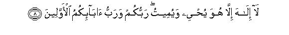
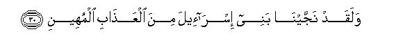
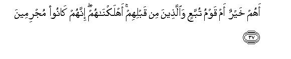
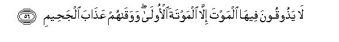
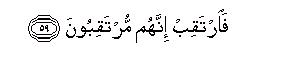

بسم الله الرحمن الرحيم
Sayyid Abul Ala Maududi - Tafhim al-Qur'an - The Meaning of the Qur'an
 44.
Surah Ad Dukhan (The Smoke)
44.
Surah Ad Dukhan (The Smoke)
The Surah takes its name from the word dukhan which occurs in verse 10.
Its period of revelation also could not be determined from any authentic tradition, but the internal evidence of the subject matter shows that this Surah too was sent down in the same period in which Surah Zukhruf and a few other earlier Surahs had been revealed. However, this Surah was sent down somewhat later. Its historical background is this: When the disbelievers of Makkah became more and more antagonistic in their attitude and conduct, the Holy Prophet prayed: O God, help me with a famine like the famine of Joseph. He thought that when the people would be afflicted with a calamity, they would remember God, their hearts would soften and they would accept the admonition. Allah granted his prayer, and the whole land was overtaken by such a terrible famine that the people were sorely distressed. At last, some of the Quraish chiefs among whom Hadrat Abdullah bin Masud has particularly mentioned the name of Abu Sufyan came to the Holy Prophet and requested him to pray to Allah to deliver his people from the calamity. On this occasion Allah sent down this Surah.
The introduction to the address revealed on this occasion for the admonition and warning of the people of Makkah contained some important points, which are as follows:
"You, O People of Makkah, are wrong in thinking that the Quran is being composed by Muhammad (upon whom be Allah's peace). This Book by itself bears the clear testimony that it is not the composition of a man but of Allah, Lord of the worlds."
"You are making a wrong estimate of the worth of this Book. You think it is a calamity that has descended on you, whereas the Hour when Allah, out of sheer mercy, decided to send His Messenger and His Book to you was highly blessed."
"You are foolishly involved in the misunderstanding that you will fight this Messenger and this Book and will win, whereas the fact is that the Messenger has been raised and the Book sent down in that particular Hour when Allah decides the destinies, and Allah's decisions are not so weak that they may be changed to a person's liking, nor are they based on ignorance and folly that there may be the likelihood of a mistake or error or weakness in them. They are rather the firm and unalterable decisions of the Ruler of the Universe, Who is All Hearing, All Knowing and All Wise. Therefore, they cannot be treated lightly.
"You yourselves acknowledge that Allah alone is the Master and Lord of the earth and heavens and of everything in the Universe and also admit that life and death are only in His power, yet you insist on making others your deities, for which the only argument you offer is that that had been the practice since the time of your forefathers, whereas if a person has the conviction that Allah alone is the Master, Sustainer and Giver of life and death, he can never entertain the doubt that there can be other gods also beside Him, who can be worthy of worship. If your forefathers had committed this folly, there is no reason why you also should continue committing it blindly. As a matter of fact, their Lord too was only One God, Who is your Lord, and they also should have worshiped only Him, Whom you should worship."
"The only demand of Allah's Providence and Mercifulness is not this that He should feed you, but also this that He should arrange guidance for you. For this very guidance He has sent His Messenger and His Book."
After this introduction, the question of the famine that was raging in Makkah has been discussed. As already mentioned, this famine had occurred on the Holy Prophet's prayer, and he had prayed for it so that when the calamity befell it would break the stubbornness of the disbelievers and then they would listen to the rebuke. It looked as if this expectation was being fulfilled to some extent, for some of the most stubborn enemies of the Truth, on account of the severities of the famine, had cried out: "O Lord, avert this torment from us and we will believe." At this, on the one hand, the Holy Prophet has been foretold :"These people will not learn any lesson from such calamities. When they have turned away from the Messenger, whose life, character, works and speech clearly show that he is Allah's true Messenger, how will a mere famine help remove their disbelief?" On the other, the unbelievers have been addressed, so as to say : "You lie when you say that you will believe as soon as the torment is removed from you. We shall just remove it to see how sincere you are in your promise. There is a graver disaster about to fall upon you. You need a much more crushing blow :minor misfortunes cannot set you right."
In this very connection, a reference has been made a little below to Pharaoh and his people, implying that those people also had met with precisely the same trial as the chiefs of the disbelieving Quraish are now afflicted. To them also a similar noble and honorable Messenger had come; they also had seen those express pointers and signs which clearly showed that he had been appointed by Allah; they also had gone on witnessing one sign after the other but they did not give up their stubbornness, till at last they made up their mind to put an end to the Messenger's life, and they met their doom, which has since become an object lesson for the people for ever.
After this the theme of the Hereafter has been taken up, which the disbelievers of Makkah vehemently denied. They said: "We have never seen anyone rising back to life after death. Raise our forefathers back to life if you are true in your claim about the life hereafter." In response to this, two arguments for the Hereafter have been presented briefly (1) That the denial of this creed has always proved destructive for the morals; and (2) that the universe is not a plaything of a thoughtless deity, but it is a wise system and no work of wisdom is ever vain or useless. Then the disbelievers demand to bring their forefathers back to life has been answered, thus : "This cannot be done every day to meet the demand of the individuals, but Allah has appointed a time when He will resurrect all mankind simultaneously and will subject them to accountability in His Court. If one has to protect oneself there, one should think about it here. For no one will be able to save himself there by his own power, nor by the power of any one else."
In connection with this Court of Allah, mention has been made of the fate of those who will be declared as culprits and of the rewards of those who will be declared as successful. The discourse has been concluded with this warning: "This Quran has been revealed in simple language in your own tongue so that you may understand it; yet if you do not understand it and insist on seeing your evil end, you may wait; Our Prophet too is waiting. Whatever is to happen, will happen at its own appointed time."

In the name of Allah, the Compassionate, the Merciful.

[1-9] Ha-Mim. By this lucid Book. We have sent it down in a highly blessed night, for We intended to warn the people.1 This was a night in which every matter is decided wisely2 by Our Command.3 We had to send a Messenger, as a mercy from your Lord.4 Indeed, He is the All-Hearing, the All-Knowing,5 Lord of the heavens and the earth, and Lord of all that lies between them, if you would really believe.6 There is no god but He.7 It is He Who gives life and death.8 He is your Lord and Lord of your ancestors who have gone before.9 (But, in fact, they have no faith) Nay, they play about in doubt.10

[10-16] Well, wait for the Day when the sky shall appear with a visible smoke, which shall envelope mankind: this is a painful punishment. (Now they say: ) "Our Lord, remove this torment from us: we do now believe." How can they rid themselves of their heedlessness? Even when a manifest Messenger11 came to them, they paid no heed to him, and said, "He is a madman taught by others."12 Were We to remove the torment a little, you would revert to the same that you were doing before. The Day We inflict the severest stroke shall be the Day when We shall take Our vengeance.13


[17-33] Before them We put the people of Pharaoh to the same test. A noble Messenger14 came to them, and said,15 "Deliver to me the servants of Allah.16 I am a trustworthy Messenger to you.17 Do not rebel against Allah: I present before you a clear authority18 (of my appointment), and I have taken refuge in my Lord and your Lord lest you should assault me. If you do not believe in me, do not harm me."19 At last, he called to his Lord, saying, "These are criminals."20 (The reply came:) "Set forth with My servants by night21 for you will be pursued.22 Leave the sea as it is. The whole host shall be drowned."23 How many were the gardens and fountains and cornfields and grand palaces that they left behind, and how many means of luxury and comfort, which they used to enjoy! This was their end, and We made others to inherit those things.24 Then neither did the heaven weep on them nor the earth,25 and they were not given the least respite. Even so We delivered the children of Israel from an abasing scourge, from Pharaoh,26 who was indeed a most prominent man among the transgressors,27 and We exalted them, knowing them to be so, above the other nations of the world,28 and showed them such Signs as were clearly a trial (for them).29

[34-42] These people say, "There is nothing beyond our first death, and we are not going to be raised back to life.30 Bring back our forefathers if you are truthful."31 Are they better or the people of Tubba'32 and those before them? We destroyed them only because they had become wicked.33 We have not created the heavens and the earth and whatever lies between them merely in sport: We have created them with the truth, but most of them do not know.34 For the resurrection of them all, the appointed time is the Day of Decision,35 the Day when a kinsman shall not avail his kinsman36 anything at all, nor shall they receive any help from anywhere except that Allah Himself may show His mercy to some one: He is the All-Mighty, the All-Merciful.37
[43-50] The zaqqum-tree38 shall be the sinner's food, like the dregs of oil.39 It will boil in the belly like the boiling of hot water. "Seize him and drag him into the midst of Hell, and pour over his head the chastisement of boiling water. Taste this: a mighty and honorable man that you are! This is the same thing about which you entertained doubts."

[51-57] The God-fearing shall be in a secure place,40 in the gardens and springs, dressed in silk and brocade,41 sitting face to face. Such will be their station! And We shall wed to them fair-complexioned, gazelle-eyed women.42 There, in full peace, they shall ask for all kinds of tasty things.43 There they shall never taste death, after their fast death in the world, and Allah by His grace will protect them from the torment of Hell.44 This is the supreme success!

[58-59] O Prophet. We have made this Book easy in your own tongue so that they may take counsel. Wait then, as they too are waiting.45
1The meaning of taking an oath by "the lucid Book" has been explained in E.N. 1 of Surah Zukhruf. Here also what has been sworn by is that Muhammad (upon whom be Allah's peace) is not the author of this Book but "We", and this Book by itself is enough to provide a proof of this. Furthermore, it has been said chat the night in which it was sent down was full of blessings. That is, the foolish and ignorant people, who have no idea of their own well-being or otherwise, regard the revelation of this Book as a disaster for themselves and are deeply anxious as how to get rid of it. But, as a matter of fact, the Hour when "We" decided to send down this Book to arouse the heedless, was highly blessed for them and for all mankind
Some commentators have expressed the opinion that the meaning of sending down the Qur'an in that night is that its revelation began during that night, and some others think that the whole of the Qur'an was transferred from Umm alKitab and entrusted to the bearers of Revelation (angels), and then revealed to the Holy Prophet as and when required and demanded by the occasion and circumstances during 23 years. As to what actully happened Allah alone has the best knowledge.
The night implies the same night which has been called lailat-ul-qadr in Surah Al-Qadr (97), There it has been said: `We sent it down in a Night of Glory," and here: `We sent it down in a blessed Night." Then the Qur'an itself has told that it was a night of the month of Ramadan (Al-Baqarah).
2The word amr-in-,hakim as used in the Text has two meanings:
(1) That the Command is wholly based on wisdom: there is no likelihood of any error or weakness in it; and
(2) that it is a firm and stable decision: it lies in no one's power to change it.
3In Surah AI-Qadr, this same thing has been expressed thus: `The angels and the Spirit (Angel Gabriel) descend in it with every decree, by the leave of their Lord." This shows that it is such a Night in the Divine administration of Allah in which He decides the destinies of the individuals and nations and countries and entrusts His decisions to His angels, who then implement them accordingly. Some commentators among whom Hadrat `Ikrimah is most prominent, have been involved in the misunderstanding that this is the 15th night of Sha'ban, for in some traditions it has been said that the destinies of people are decided during that night. But Ibn 'Abbas, Ibn `Umar, Mujahid, Qatadah, Hasan Basri, Sa' id bin Jubair, Ibn Zaid, Abu Malik, Dahhak and many other commentators are agreed that this is the same night of Ramadan, which has been called lailat-ul-qadr, for the Qur'an itself has stated this, and where any Qur'anic statement exists, no other view can be formed on the basis of random reports. Ibn Kathir says, "The traditions that Imam Zuhri has related from 'Uthman bin Muhammad that destinies are decided from one Sha`ban to the next Sha`ban is an indirect tradition and such traditions cannot be cited as against the clear texts of the Qur'an. " Qadi Abu Bakr Ibn al-`Arabi says: "No Hadith in respect of the 15th of Sha'ban is reliable, either in respect of its merit, or about this that decisions with regard to the destinies are taken in it; therefore, they do not merit attention, (Ahkam ul-Qur'an).
4That is, "It was not only a demand of wisdom to send a Messenger with. this Book but also of Allah's mercy, for He is the Providence, and Providence requires that not only should arrangements be made for nourishing the servants' bodies but they should also be afforded right guidance by knowledge, that they should be made aware of the distinction between right and wrong and that they should not be left wandering in darkness."
5The object of mentioning these two attributes of Allah in this context is to warn the people of the truth that He alone can give correct knowledge for He alone knows all the realities. Not to speak of one man, even if all men join to determine a way of lift for themselves, there can be no guaranty of its being the right way, for even the whole of mankind together cannot become all-hearing and all-knowing. It does not lie in its power to comprehend all those realities whose knowledge is essential for determining a correct way of life. This knowledge is only with Allah: He alone is All-Hearing and AII-Knowing. Therefore, He alone can tell what is guidance for Man and what is falsehood, what is the Truth and what is wrong, what is good and what is evil.
6The Arabs themselves admitted that Allah alone is the Lord (Master and Providence) of the Universe and of everything in it. Therefore, it has been said to them: "If you arc not admitting only verbally but are really conscious of His being the Providence and are convinced of His being the Master, you should admit that: (1) It is the very demand of His Mercifulness and Providence that He should send a Hook and a Messenger for the guidance of man; and (2) it is His right as the Master and your duty as His servants that you should obey every Guidance and submit to every Command that comes from Him. "
7The real God Who alone has the right that He should be worshiped and served.
8That is, "There is no god other than Allah, nor can there be. Therefore, it is against reason that you should disdain the worship of Him Who breathed life into dead matter and made you a living man, and Who possesses full powers to keep you alive as long as He likes and bring your life to an end whenever He likes, or you serve any other than Him, or start worshiping others besides Him."
9There is a subtle allusion in it to this: "He was also Lord of those of your ancestors who took other gods besides Allah; they had not done the right thing by giving up their real Lord and serving others that you should be justified in imitating them and regard their conduct as an argument for the soundness of your creed. They ought to have served only Him, because He alone was their Lord.
10In this brief sentence an allusion has been made to an important truth. Even atheists or polytheists do come across occasions when their bean from within says; There is somewhere some weakness in the creed that you have adopted. The atheist may apparently be very firm in his denial of God, his heart at one or the other time does bear the testimony that this wonderful and wise system which extends from the particle of dust to the galaxies and from a blade of grass to the creation of man, could not come into existence without an All-Wise Designer. Likewise, a polytheist may be deeply submerged in his polytheism, his heart also sometimes cries out: Those whom you have adopted as deities cannot be God. But this testimony of the heart neither leads the atheist and the polytheist to the conviction about, the existence and Oneness of God, nor to conviction and satisfaction about their creed of atheism and polytheism itself. Instead, their religion, in fact, is based on doubt, no matter how convinced they might appear to be of its truth. As for the question: Why doesn't this doubt make them restless, and why don't, they seek the truth seriously so as to obtain a satisfactory ground for their convictions? the answer is: they lack seriousness in religious matters. W hat they really regard as important are the worldly earnings and acquisitions and their enjoyment, in search of which they expend all their powers and abilities of the heart and mind and body. As for the religious matters, they are in fact no more than fun, a mere pastime, amusement, or a mental diversion for them, for which they cannot spare even a few moments of serious study. Religious rites are being performed as an entertainment; discussions about denial and atheism are being engaged in as an amusement; no one can spare a few moments from his worldly pursuits to consider whether he has turned away from the Truth, and if so, what would be its consequences.
11Rasul-i-mubin has two meanings:
(1) His being a Messenger is quite evident from his character, his morals and his works; and
(2) he has made every effort to make the truth plain and clear.
12What they meant was: "This was a simple man, some others have incited and deceived him: they secretly forge and teach him verses of the Qur'an, and he comes and recites them before the people: they sit back in peace and leave him alone to receive the abuses and be pelted with stones." They would make a mockery of all the arguments, the admonitions and the serious teachings which the Holy Prophet had been presenting since several years and was growing weary. Neither they paid any attention to the rational things being expressed in the Qur'an .nor recognized the extraordinary character of the man who was presenting them, nor took any trouble to think what nonsense they were uttering when they imputed such things to the Holy prophet. Obviously, if there had been another person who gave .secret instruction to the Holy Prophet, he could not have remained hidden from Hadrat Khadijah and Abu Bakr, 'Ali and Zaid bin Harithah and other early Muslims, who were the closest and constant Companions of the Holy Prophet. Then, how it is that these very people only became his most devoted and dedicated followers, whereas if the business of prophethood had depended on the secret instruction of sonic other person, these very people would have been in the forefront to oppose him (For further explanation, see An-Nahl: 103, AI-Furqan: 4-6 and the corresponding E.N.'s).
13The commentators have seriously disputed the meaning of these verses, and the difference of opinion existed even in the time of the Companions. Masruq, the well-known pupil of Hadrat 'Abdullah bin Mas'ud, states: One day when we entered the mosque of Kufah, we saw a preacher addressing the people. He recited the verse: Yauma ta'tis-sama-u bidukhan-im-mubin, then asked: "Do you know what kind of smoke it is ? This smoke will appear on the Day of Resurrection and will make the disbelievers and the hypocrites blind and deaf, but the believers will be affected only to the extent as if they had caught cold.' Hearing this commentary we went to Hadrat 'Abdullah bin Mas'ud and reported to him what the preacher had said. Hadrat 'Abdullah at that time was lying down. On hearing this commentary he sat up startled and said: "When a person does not have the knowledge he should ask those who have it. The fact is that when the people of the Quraish went on refusing to accept Islam and continued to oppose the Holy Prophet, the Holy Prophet prayed: O God, help me with a famine like the famine of Joseph (peace be upon him); consequently, a very severe famine overtook Makkah and the people were forced to eat bones, skins and carrion. The conditions became so bad that whoever looked up to the sky would see nothing but smoke due to intensity of hunger. At last, Abu Sufyan came to the Holy Prophet and said: "You tell the people to treat their kindred kindly: your own people are starving: kindly pray to God to remove this calamity." This was the time when the people of the Quraish had started saying: "O God, if You remove this torment from us, we will believe." This same event has been referred to in these verses; and the severest blow implies the calamity that was inflicted on the Quraish in the Battle of Badr. " This tradition has been related by Imam Ahmad, Bukhari Tirmidhi, Nasa'i, Ibn Jarir and Ibn Abi Hatim from Masruq with several chains of authorities. Besides Masruq, Ibrahim Nakha'i Qatadah. `Asim and 'Amir also have related that Hadrat 'Abdullah bin Mas'ud had given the same commentary of this verse. Therefore there cannot be any doubt that Ibn Mas'ud actually held this same opinion. Among the immediate followers of the Companions, Mujahid, Qatadah. Abul 'Aliyah, Muqatil, Ibrahim Nakha'i, Dahhak and 'Atiyyah al-'Aufi and others havc also concurred with Ibn Mas'ud in this commentary.
On the contrary, scholars like Hadrat 'Ali, Ibn 'Umar, Ibn 'Abbas, Abu Said Khudri, Zaid bin 'AIi, and Hasan Basri say that in these verses mention has been made of the time just before Resurrection, and the smoke that has been foretold will envelop the earth at that time. This commentary is further strengthened by the Traditions that have been reported from the Holy Prophet. Hudhaifah bin Asid al-Ghifari says: One day when we were talking about Resurrection, the Holy Prophet came out to us and said: "Resurrection will not be established till ten Signs have appeared one after the other: Rising of the sun in the west, smoke, the beast, emergence of God and Magog, descent of Jesus son of Mary, sinking of the earth in the East, in the West and in the Arabian Peninsula, and the appearance of a fire from Yemen, which will drive the people away." (Muslim) This is confirmed by Abu Malik Ash`ari's tradition which has been related by Ibn Jarir and Tabarani, and Abu Said Khudri's tradition which has been related by Ibn Abi Hatim. Both these traditions show that the Holy Prophet regarded the smoke as one of the Signs of Resurrection and also said that when that smoke will spread, it will affect the believer only like a cold, but will infuse every nerve of the disbeliever and come out from every part of his body.
A study of the verses under consideration can remove the disparity between the two commentaries. As for the commentary of Hadrat 'Abdullah bin Mas'ud, it is a fact that a severe famine had hit Makkah resulting from the Holy Prophet's prayer and it had unnerved the disbelievers considerably and they had requested the Holy Prophet to pray for its removal, as referred to at several places in the Qur'an. (See AI-An'am: 43, AI-A'raf: 94-95, Yunus: 21, AI-Mu'minun: 75-77 and the corresponding E.N.'s). In these verses also there is a clear pointer to the same conditions. The disbelievers' saying: "Our Lord, remove this torment from us: we will believe," Allah's saying: "How can they rid themselves of their heedlessness? Even when a manifest Messenger came to them, they paid no heed to hira, and said: He is a madman taught by others,"- then saying: "Were We to remove the torment a little, you would revert to the same that you were doing before." all this can be relevant only if it refers to the conditions of the Holy Prophet's time. To apply them to what will happen near the time of Resurrection, is not correct. Therefore, in view of this, Hadrat `Abdullah bin Mas'ud's commentary seems to be correct, but its this part that "the smoke" also had appeared in that very time, in that when the people in their extreme state of hunger looked up to the sky, they could see nothing but smoke, does not seem to be correct. It also does not conform to the apparent words of the Qur'an and is against the Traditions as well. The Qur'an does not say: the sky brought forth the smoke and it spread over the people; but it says: "Wait for the Day when the sky will appear with a visible smoke, and it will envelop mankind. " A study of the subsequent verses clearly points to this meaning: "When you do not believe even after the Messenger's admonition, nor take heed from the warning given in the shape of the famine, then you should wait for Resurrection. At that time when you sec your doom confronting you, you will fully realize what was the truth and what was falsehood." Therefore, as for the smoke, the correct view is that it has nothing to do with the time of the famine, but it is a Sign of Resurrection and the same is also confirmed by the Hadith. It is surprising that those commentators who confirmed what Hadrat Ibn Mas`ud said confirmed him wholly and those who refined what he said refined him wholly, whereas a study of the verses and the Hadith clearly shows how far he was correct and how far he was wrong.
14The words rasul-un karim in the original imply a man who is characterized with most noble traits of character and highly praiseworthy qualities.
15One should note that the sayings of the Prophet Moses being cited here, are not parts of a continuous address delivered by him at any one time, but they are a summary in a few sentences of what he said to Pharaoh and his courtiers on different occasions during many years. For the details, sec AI-A'raf: 103-136, Yunus: 75-92, Ta Ha : 45-76, Ash-Shua'ra: 10-68, An-Naml: 7-14, AlQasas: 32-42, AI-Mu'min: 23-46, Az-Zukhruf: 46-56 and the corresponding E.N.'s.
16That is. "Leave the children of Israel to go with me." This demand is synonymous with the demand made in Al-A`raf: 105, Ta Ha: 47 and Ash-Shur'ra: 17. Another translation that has been reported from Hadrat 'Abdullah bin `Abbas is: "Servants of Allah, fulfill my right," i.e.. "Accept what I say : believe in me: follow my guidance. This is my right on you from Allah. " The following sentence: `I am a trustworthy Messenger to you," is more in keeping with the second meaning.
17That is, "I am a reliable Messenger: I do not forge anything from myself, nor am I the one who would present something based on personal interest or desire, or forge a command or law, in the name of Allah. Rest assured that I shall convey to you intact only that which my Sender has commanded. " (It should be noted that these two sentences belong to the time when the Prophet Moses first started preaching His Message).
18In other words, it means: "Your rebellion against me is in fact rebellion against Allah, for what annoys you is not what I say but what Allah says, and I only present those things as His Messenger. If you doubt whether I have really ban sent by Hun or not, I present before you a clear authority of my appointment from Allah. " This authority does not imply any one miracle but a long series of the miracles which the Prophet Moses continued to show to Pharaoh and his people for years since the time he $roved in the court of Pharaoh till his last days in Egypt. Whatever Sign they denied, was followed up by a greater Sign of authority by him. (For explanation, see E.N.'s 42, 43 of Az-Zukhruf).
19This was said at the time when, as against all the Signs presented by the Prophet Moses, Pharaoh was still showing stubbornness, but was feeling upset and confounded at the realization that all classes of the Egyptian society were rapidly being influenced by those Signs. In that period first of all he made the speech before his full packed court as mentioned in vv. 51-53 of Surah Zukhruf above (see E,N.'s 45 to 49). Then, when he felt the ground slipping from under his feet, he made up his mind to kill Allah's Messenger. At that time the Prophet said the words as mentioned in Surah Al-Mu'min: 27 ; to the effect: "I have taken refuge in my Lord and your Lord against every arrogant person who does not believe in the Day of Reckoning." Here, the Prophet Moses is referring to that same thing and telling Pharaoh and his chiefs: "Look, I have sought Allah's refuge against all sorts of violence from you : now you cannot harm me: but if you wish yourselves well, do not harm me. If you do not want to believe what I say, you may not, but you should never lay your hands on me, otherwise you will meet with catastrophic consequences."
20This is the final report that the Prophet Moses presented before his Lord, saying: "These are criminals." That is, their being the criminals has been confirmed finally and absolutely. They have exhausted every chance of concession and respite for reformation. It is time that the final fatal decision be passed against them.
21"With my servants": with all those people who have believed, including both the Israelites and the Egyptian Copts who had become Muslims since the time of the Prophet Joseph till that of the Prophet Moses, and those also who had been influenced by the Signs shown by Moses and His preaching and accepted Islam from among the Egyptians. (For explanation, see Surah Yusuf: E.N. 68).
22This was the initial command given to the prophet Moses for the migration. (For explanation, see Ta-Hit: 77, Ash-Shu'ara': 52-68 arid the corresponding E.N.'s).
23This command was given when the Prophet Moses had crossed the sea along with his caravan and wanted that he should restore the sea to its former state by smiting it with the staff so that Pharaoh and his hosts should not pursue them on the dry path created by the miracle. At that times it was said: "Leave the sea divided as it is, so that Pharaoh and his armies should descend into it; then the sea will be restored and they will be drowned all together."
24Hadrat Hasan Basri says that "others" here implies the children of Israel, whom Allah made heirs of the land of Egypt after Pharaoh's people, and Qatadah says it implies the other people who inherited Egypt after the people of Pharaoh, for the Histories do not make any mention that the Israelites ever returned to Egypt after the exodus and inherited it. This same point has been disputed by the later commentators also. (For a detailed discussion, see Ash Shua'ra: 57-59 and the E.N.'s on it).
25That is, "When they were the rulers, they were known for their glory and grandeur: hymns were sung of their praise, flatterers flattered them to such an extent as if the whole world was devoted to them for their excellences and indebted to them for their favors and there was none more popular in the world than they. But when they fell there was none to shed a tear on their fall; rather the world felt relieved that a cause of distress had been removed. Obviously, they had neither done any good to the people that the dwellers of the earth might weep on them, nor anything for the sake of Allah's pleasure that the dwellers of the heavens might grieve over their ruin. As long as Allah continued to give them rope by His will, they enjoyed life as they pleased; but when they transgressed all limits in their crimes, they were cast aside like so much rubbish.
26That is, Pharaoh by himself was an abasing torment for them and all other torments wen indeed offshoots of the same great torment.
27There is a subtle satire in it on the chiefs of the disbelieving Quraish. It means to say this: "You do not enjoy any place of distinction among the transgressors against Allah. Pharaoh indeed was a rebel of the highest order who was ruling on the throne of the largest kingdom of the time as a god. When he was swept away like straw, how can you prevent the Divine wrath?"
28That is, 'Allah was well aware both of the qualities and of the weaknesses of the children of Israel. He had not chosen them blindly. For when he chose them from among the contemporary nations to become the standard-bearers of His message and His Tauhid, they were the most suitable people in His knowledge for the purpose."
29For explanation, sec Al-Baqarah :49-74, An-Nisa: 153-160, Al Ma'idah: 20-26, Al-A'raf: 138-171, Ta-Ha: 80-97 and the corresponding E.N.'s
30That is, "When we die the first time, we shall be annihilated: there will be no other lift after that".
31This was their reasoning: We have never seen a dead person resurrected to life. Therefore, we believe that there will be no other life after death. If you claim that there will be another life, then resurrect our forefathers from their graves, so that we are convinced of the life-after-death. If you do not do this, we would think that your claim is false. This was, as they thought, a very strong argument for the refutation of life-after-death, whereas it was absurd. Nobody had told them that the dead would return to this very world after being raised back to life, nor the Holy Prophet, nor any Muslim, had ever claimed that he could raise the dead back to life.
32Tubba was the title of the kings of the Himyarites, like the titles of Khosroes, Caesar, Pharaoh etc. which have been associated with the kings of different countries. They were a branch of the Sabaeans, who attained domination over Saba in 115 B.C. and puled it till 300 A.D. They have been a well known people of Arabia for centuries. (For details, see E.N. 37 of Surah Saba).
33This is the first answer to the disbelievers' objection; it means: No individual group or nation which denies the Hereafter can help becoming criminal. Perversion of the morals is its inevitable result, and human history bears evidence that whichever nation adopted this view of life ultimately perished. As for the question: Are they better or the people of Tubba' or the people before them? ii means this: The disbelievers of Makkah have not been able to attain to the prosperity and splendor that became the lot of the people of Tubba' and of the people of Saba and of the people of Pharaoh and others before them. But this material prosperity and worldly splendor could not save them from the consequences of their moral degeneration. How will then the chiefs of the Quraish be saved from destruction on the strength of their puny resources and wealth? (For details, see E.N.'s 25 to 36 of Surah Saba).
34This is the second answer to their objection; it means: "Whoever denies life-after-death and the rewards and punishments of the hereafter, in fact, regards this world as a plaything and its Creator as a foolish child. This is why he has formed the view that tnan, after raising all sorts of the storms in the world, will end up in the dust one day and none of his good or bad acts will bear any fruit. The fact, however, is that this universe is the creation of an All-Wise Creator and not of a frivolous being, and it cannot be expected from an AlI-Wise Creator that he would perform a useless and vain act." (For a detailed explanation, see AI-An'am: 73, Yunus: 5-6, Al-Anbiya: 16-18, AI-Mu'minun: 115, Ar-Rum: 8-9 and the corresponding E.N.'s).
35This is the answer to their demand: "Bring back our forefathers if you are truthful." It means: 'Life-after-death is not a trivial matter; it cannot be that whenever somebody denies it, a dead person may he raised immediately from the graveyard and presented before him. For it a time has been fixed by the Lord of the worlds, when He will resurrect to life all the former and the latter generations, gather them together in His Court and will decide their cases. You may believe in it or may not, but this will in any case happen on its own pre ordained time. If you believe in it, it will be to your own advantage, for, being forewarned, you will make preparations to fare well in that Court. If you do not believe in it, you will incur loss for yourselves, for you will expend your whole life in the misunderstanding that good and evil are confined only to this worldly lift; after death there is going to be no court where our good or bad deeds might have to be judged for any permanent results."
36The Arabic word "maula " is used for a person who supports another person either because of kinship, or friendship, or some other relationship.
37These sentences portray the nature of the Court that will be established on the Day of Decision. It will be a Court where nobody's help or support will help rescue any culprit nor have his sentence reduced. All powers will rest with the real Sovereign Whose decisions cannot be withheld from being enforced nor influenced by any power. It will entirely depend on His own discretion whether He forgives somebody mercifully, or awards him a lesser punishment; it indeed behooves Him to exercise justice mercifully and not mercilessly, but whatever decision He gives in any case, will be enforced entirely and completely. After this portrayal of the nature of the Divine Court, in the following few sentences it has been stated what will be the fate of those who will be found guilty in that Court, and what will be conferred on those about whom it will be established that they had been refraining from Allah's disobedience in the world out of fear of Him.
38For the explanation of zaqqum, see E.N. 34 of Surah As-Saaffat.
39The word al--muhl in the original has several meanings: molten metal, pus-blood, molten tar, lava, dregs of oil. These are the different meanings given by the lexicographers and commentators, but if this word is understood with reference to zaqqum (cactus), it may mean its juice which will probably be like the dregs of oil.
40"A secure place" : A place safe from every kind of fear, grief, worry and danger, hardship and trouble. According to a Hadith, the Holy Prophet said: "It will be proclaimed to the dwellers of Paradise: You will remain in good health, will never fall ill; will live for ever: will never die; will ever remain happy and prosperous and will never meet with a misfortune; will ever remain youthful, will never become old. " (Muslim, on the authority of Abu Hurairah and Abu Sa id Khudri).
41Sundus and istabraq in the original are fine silk cloth and thick silk cloth respectively.
42In the original, hur-un 'in : fair complexioned, large-eyed women. (For further explanation, see E.N.'s 26,29 of As-Saaffat).
43That is, they will order the attendants in Paradise to bring anything they would like in any measure they would demand, and it will be presented before them. In this world, a man cannot ask for a thing in a hotel, or even his own things in his own house, with the freedom and satisfaction as he will ask for these in Paradise, for in the world nothing is found anywhere in un-limited measure; whatever man uses here, he has to pay for it. In Paradise, things will belong to Allah, and the servants will enjoy full freedom to use them. Neither will there be the danger of the failure of the supply, nor the necessity of a bill to pay.
44Two things are worthy of notice in this verse.
First, after mentioning the blessings of Paradise special mention has been made of being secure from Hell separately whereas a person's entry into Paradise by itself amounts to his being safe from Hell. This is because man can feel the worth of the reward of obedience fully only when he is informed what end the disobedient people have met and from what evil end he himself has ban saved.
Secondly, Allah is mentioning those people's safety from Hell and their entry into Paradise as a result of His own grace. This is meant to warn man of the truth that this success cannot be achieved by any person unless he is blessed by Allah's grace. Although man will be rewarded for his own good deeds, in the first place he cannot do good unless favored by Allah's succor; then even the best deed that man is able to perform, cannot be absolutely perfect and none can claim that it is flawless and faultless. It is only Allah's bounty that He should overlook the servant's weaknesses and defects in his actions and accept his services and bless him with rewards; otherwise if He resorts to minute accountability no one can dare claim to win Paradise only on the strength of his own deeds. The same thing has been said by the Holy Prophet in a Hadith to the effect: "Act and try to act as righteously as you possibly can, but know that the action of a person alone will not make him enter Paradise. It was asked: What about your own action, O Messenger of Allah? He replied: Yes, even I won't enter Paradise on the strength of my actions, unless of course, my Lord covers me up in His mercy."
45That is, "If they do not accept the admonition even now, you should wait to see how they are visited by their doom; and they also are waiting to see what becomes of the message that you are giving them. "